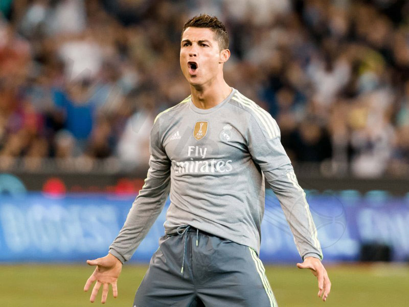

The Legend
Cristiano Ronaldo
From the streets of Madeira to the greatest stages in football history.
Explore His Story
0
Career Goals
0
Ballon d'Or
0
Major Trophies
Explore His Career
Follow Ronaldo's journey through each era
Player Profile
| Cristiano Ronaldo — Basic Info | |
|---|---|
| Full Name | Cristiano Ronaldo dos Santos Aveiro |
| Born | February 5, 1985 — Madeira, Portugal |
| Height | 187 cm |
| Position | Forward |
| Nationality | Portuguese |
| Current Club | Al Nassr |
Ronaldo has scored 969 career goals as of April 2026, making him the all-time top scorer in football history.
Career Stats
